Your central hub for finding what needs attention, fixing it quickly, and keeping your item data accurate.
Which items are missing key information? Which need updates? Where does inventory need attention? Which items have had their margins updated?
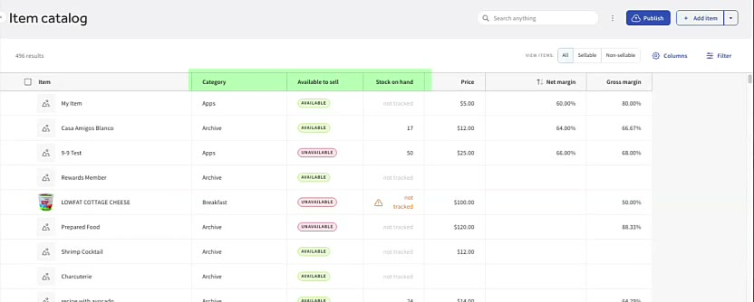
Use the search bar at the top to narrow the list. Search by item name, category, SKU, or anything else visible in your table columns.
Combine several search terms, and add filters on top to narrow things down even more.
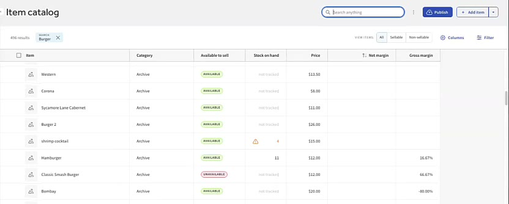
Open Columns to show, hide, and reorder what you see, so the table fits the task in front of you.
Reviewing margins? Surface just the price, cost, and margin fields so nothing unrelated gets in the way.
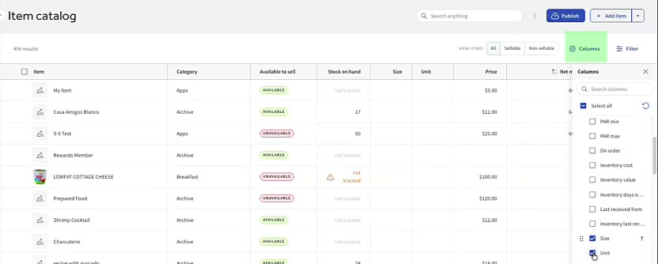
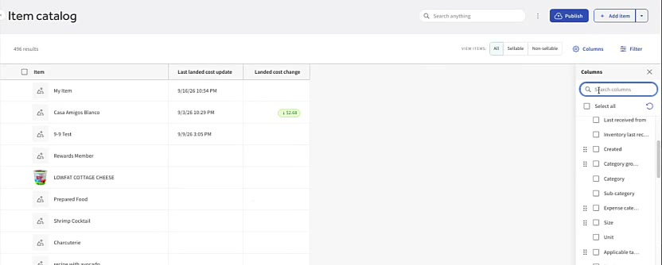
Sort by a field like price, inventory level, or recent sales activity. Use the sort icon on any column header, or the Sort by dropdown.
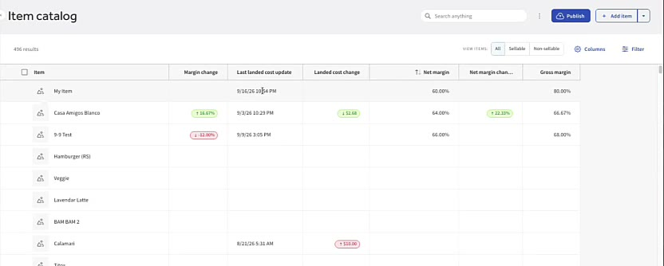
Filters narrow the catalog to items that match your criteria, and you can combine them to answer a specific question.
Example: spot worrying margin changes this month after an invoice came in.
Use the Warnings and info filter to surface problems like duplicate item names, and missing, duplicate, or invalid barcodes. Fixing these keeps your item data accurate.
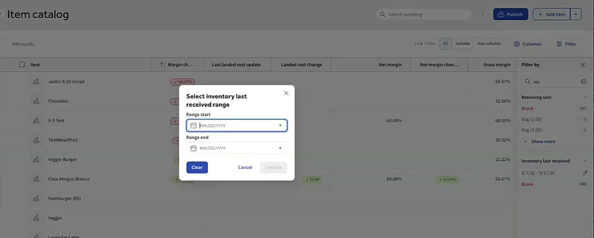
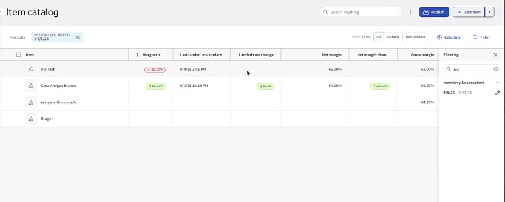
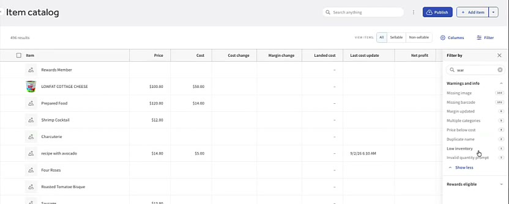
Many fields can be edited by clicking straight into the cell. There's no need to open each item's detail page.
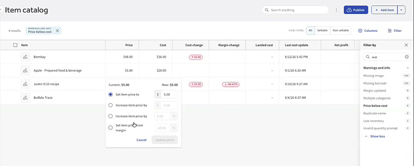
Select several items and a bar appears at the bottom of the page with three menus:
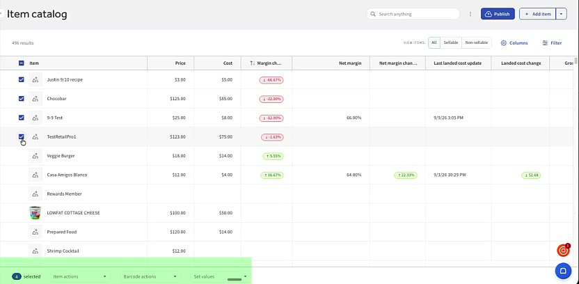
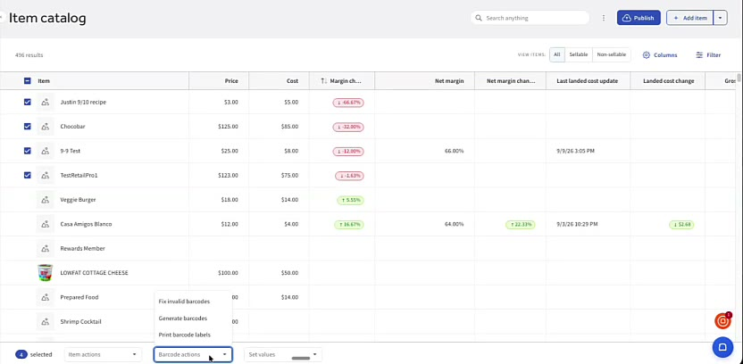
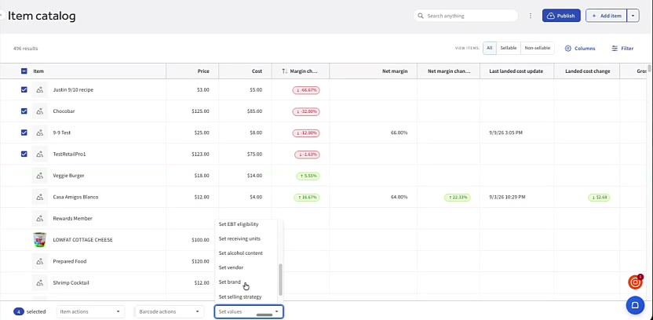
Use the item catalog as your workspace: find what needs attention, fix it right in the table, and track your progress across the catalog.